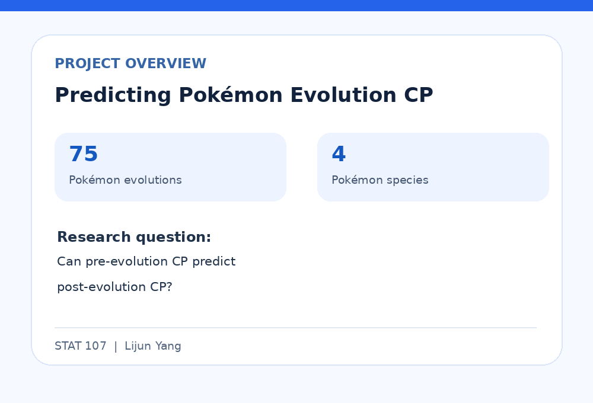
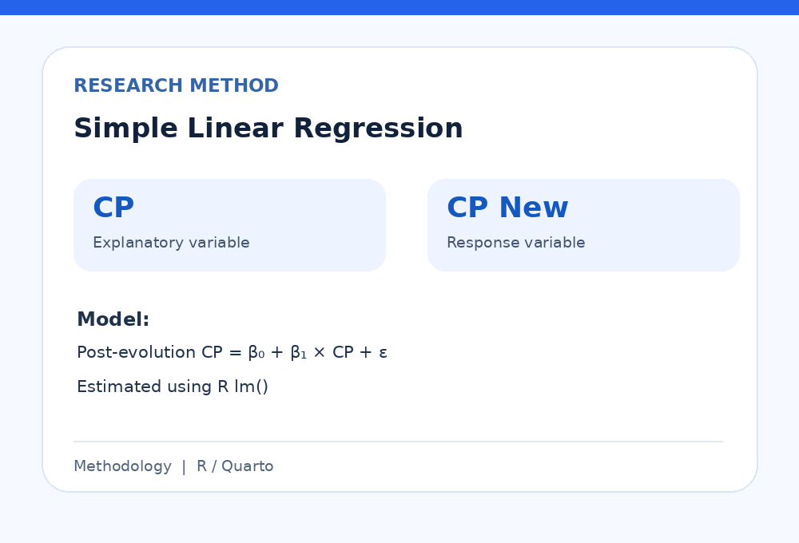
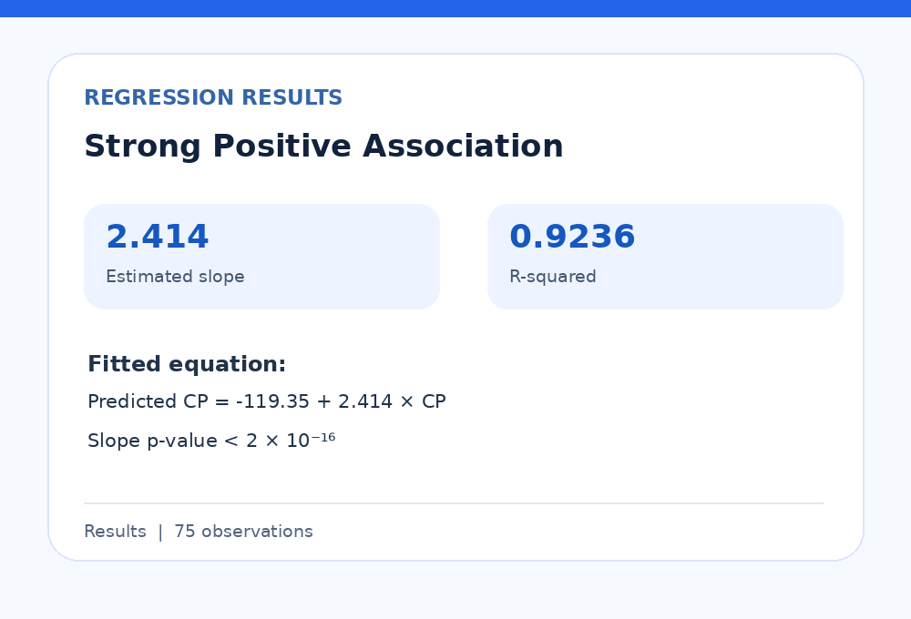
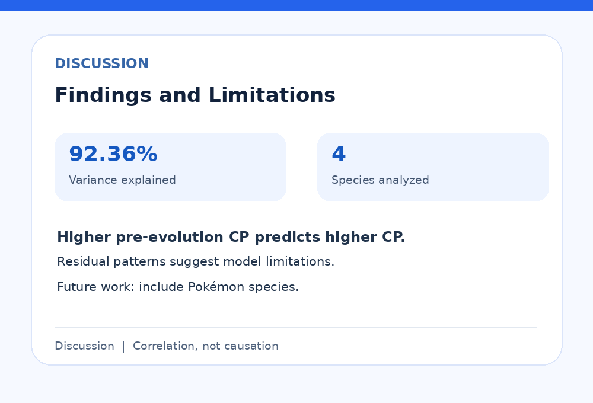

My name is Lijun Yang, and I am an undergraduate student at the University of California, Riverside. I am interested in business analytics, finance, and technology. I enjoy learning how businesses use data to make decisions and solve problems. Studying at UCR has helped me develop my critical thinking, communication, and problem-solving skills. As an international student, I have also learned to adapt to new environments, work with people from different backgrounds, and become more independent. These experiences have helped me grow both academically and personally.
During my summer internship at China Construction Bank in Suzhou, China, I worked as an analyst intern in the investment department. My responsibilities included assisting with financial analysis, preparing financial reports, creating PowerPoint presentations, and supporting financial modeling and valuation analysis. At the beginning of my internship, I was unfamiliar with many financial documents and professional tasks. However, with guidance from my coworkers and continued practice, I became more confident in my work. I learned how to organize financial information, use Microsoft Excel efficiently, and present information clearly. This experience helped me understand how financial institutions operate and how analytical skills are used in real business situations.
One of the most valuable lessons I learned during my internship was the importance of accuracy and teamwork. Financial analysis requires careful attention to detail because even small mistakes can affect business decisions. I also learned that communication is important when working with colleagues and preparing reports. By asking questions, listening to feedback, and improving my work, I developed stronger professional skills. My internship increased my interest in business analytics because I saw how financial information and data could support important decisions.
At university, I continue to develop my technical and analytical abilities. I have experience using Microsoft Excel and PowerPoint, and I am learning programming, statistics, and web development. Through my coursework, I am gaining experience with HTML, CSS, and data analysis tools. I enjoy working on projects that allow me to apply classroom knowledge to practical problems. Creating this portfolio website is an opportunity for me to improve my technical skills while presenting my educational background, professional experience, and personal achievements.
In the future, I hope to continue my education and pursue a career related to business analytics, financial analysis, or data analytics. I want to improve my ability to interpret data, identify useful patterns, and communicate insights effectively. I believe that combining business knowledge with technical skills will help me succeed in a competitive professional environment. I am motivated to keep learning, gain more practical experience, and take on new challenges. My goal is to become a professional who can use data and analytical thinking to help organizations make better decisions.
• Assisted with financial analysis and investment research.
• Supported financial modeling and company valuation analysis.
• Prepared weekly financial reports using Microsoft Excel.
• Created PowerPoint presentations for the investment team.
• Organized financial data and improved report preparation efficiency.
• Worked on a Pokemon data analysis project for a university course.
• Applied statistical concepts to explore and interpret data.
• Practiced organizing information and presenting analytical findings.
• Developed problem-solving and data analysis skills.
• Created a multi-page website using HTML and CSS.
• Organized webpage content with semantic HTML elements.
• Added images, tables, navigation links, and interactive elements.
• Practiced website design, coding, and debugging skills.



